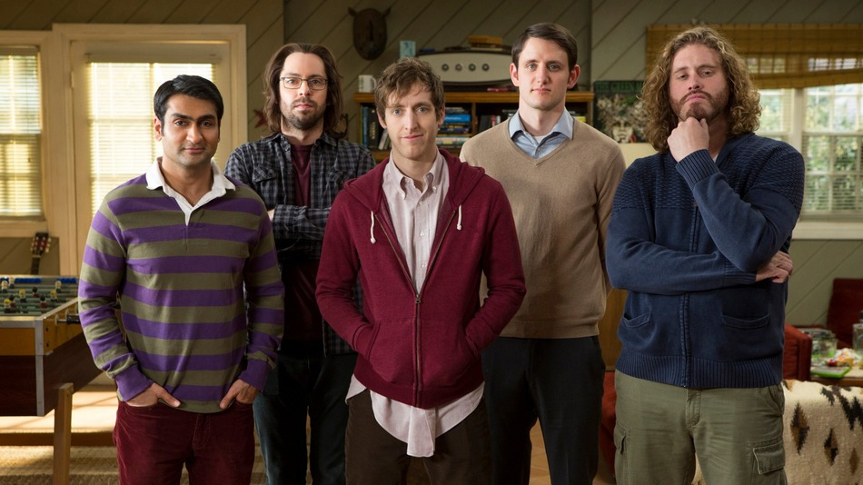

FINDING YOUR NICHE
CHRISTINA TRUONG
@christinatruong
Distill: The Essence of Development
August 7-8, 2014 • San Francisco, CA
1979 - 1984
I remember being excited to start kindergarten, excited to embark on a new adventure. I actually remember saying, “I can’t believe I’m going to school tomorrow!
1992-1994
I really tried to fit in but around the age of 12-13, I came to the realization that my efforts were being wasted. It didn't matter what I did, I just couldn't be something I wasn't. I still felt like I was on the outside looking in but I started to at least be comfortable with the idea of just trying to be myself, even if that meant getting made fun of, even if that meant being left out, even if that meant being different.
1996-2001
Around this time I was getting into the internets and going to chat rooms where I got to meet people from all over. People that felt like me. Even though I had friends, there was still a part of me that didn't feel totally at ease. I still had to pretend sometimes. After I graduated high school, I took a 3 week trip to NY. I even met one of my chat room buddies. This experience totally opened up my eyes to a whole new world. It confirmed that there were people out there, like me.
WHAT DOES THIS HAVE TO DO WITH TECH?
For me, navigating through the tech world sometimes makes me feel like that young girl again. Trying to fit in or feeling like there was something wrong with me because I wasn’t like everybody else.
WOW! GIRL DEV?!
Blog Post - That’s what she said: thoughts from a female dev
I eventually joined a company where not only was I the only female developer (at the time), I was also the first to ever be hired. Apparently only one other woman had ever applied before me. So, I decided to write a blog post about being a female developer. While I was do research, I stumbled onto some really disturbing stories about the rampant sexism in the industry and was and still am surprised at how hostile the environment can be for women.
Toronto Census 2011
source
(Hover over the graph to see percentages)
[refer to diagram] This is the breakdown of the % of people who identify themselves as visible minorities in Toronto. explain diagram
It’s not that I didn’t get along with most of the people I worked with. In fact, some of my best friends are people in tech :)
A LIST APART: WEB DESIGN SURVEY
source: 2007 , 2011
(Hover over the graph to see percentages)
(A List Apart explores the design, development, and meaning of web content, with a special focus on web standards and best practices)
a list apart: web design survey
source: 2007 , 2011
(Hover over the graph to see percentages)
ALA vs various TECH COMPANIES
(Hover over the graph to see percentages)
Now let's compare the stats from 2007 to some of the numbers released recently from your favorite tech companies and see what/if anything has changed in 7 years (which coincidently is the same amount of time I’ve been in the industry.)
ALA vs various TECH COMPANIES
(Hover over the graph to see percentages)
It looks like a whole lotta nothing has changed except the numbers of Asians in the industry is significantly higher. The ALA survey included people from all over the world with the majority of respondents from the US and Europe whereas the numbers from the tech companies focus on only the US so we can’t do a straight comparison but it’s interesting to note how the % of other groups are pretty much the same.
DIVERSITY ISN'T JUST ABOUT THE NUMBERS
The numbers only tell one part of the story. Of the different minority groups, women & Asians are represented in higher numbers than any other group. Asians are actually overrepresented in some cases. I’m an Asian female, I should be happy because I’m winning here right?
DIFFERENT MARGINALIZED GROUPS EXPERIENCE DIFFERENT KINDS OF DISCRIMINATION
[Different marginalized groups experience different kinds of discrimination] so I'm not at all surprised by these numbers.
Culture

HBO's Silicon Valley
These feelings of exclusion don’t always come just from being in the minority in terms of gender or race.
#YOU CAN'T ASPIRE TO BE WHAT YOU CAN'T SEE
YOU'RE NOT A "REAL" DEVELOPER
There’s the physical representations but there’s also the “OH MY GOD, YOU DON’T USE GRUNT?” Or on the flipside, “YOU’RE STILL USING GRUNT. DON’T YOU KNOW ABOUT GULP?” Or you ask a question and the answer is “Why would you want to do that?”
CULTURE FIT
!=
BEING BFFS
Culture fit is important. It makes sense to try to find people that will get along and work well together for 40hrs+ a week. But culture fit doesn’t mean hiring people you want to be friends with. Working well together and being buddies is not the same thing. Especially since the industry is already dominated by factors such as race and culture, leaning on “cultural fit = people like us” can lead to continued dominance in the industry.
#What does diversity really mean?
DIVERSITY
the state or fact of being
variety; multiformity.
a point of difference.
dictionary.reference.com
Diversity means actually having people who are DIFFERENT. People who look different. People with different opinions, personalities, backgrounds, ages, interests and different point of views.
SOLUTIONS?
Speak up, be heard - for yourself and for others
listen to what others have to say
welcome and embrace differences
just be you
So I’ve talk a lot about the problem. I should probably offer a solution, right?
Well… I’m not sure if I really have one. I think we’re still stuck at trying to figure out what the problem is!
#Further readings
* [Asian Americans and the 'model minority' myth](http://www.latimes.com/opinion/op-ed/la-oe-0123-wu-chua-model-minority-chinese-20140123-story.html)
* [Report Takes Aim at ‘Model Minority’ Stereotype of Asian-American Students](http://www.nytimes.com/2008/06/10/education/10asians.html?_r=1&)
* [Employers' Replies to Racial Names](http://www.nber.org/digest/sep03/w9873.html)
* [Learn to Code Switch Before You Learn to Code](http://dashes.com/anil/2013/12/learn-to-code-switch-before-you-learn-to-code.html)
* [#iamdoingprogramming made me feel more alienated from the tech community](https://medium.com/@christinatruong/iamdoingprogramming-made-me-feel-more-alienated-from-the-tech-community-5cba33911416)